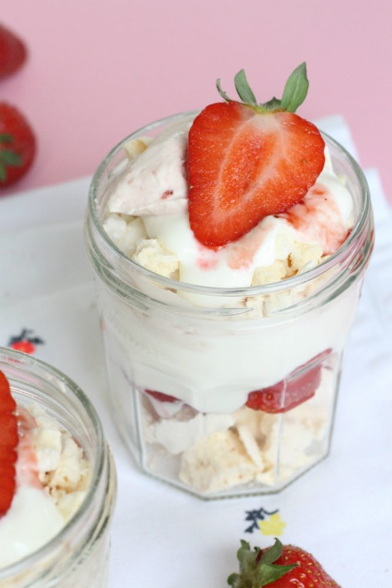

voorgerecht
hoofdgerecht
yoghurt Eton Mess
ingrediënten
- 150 gram merengue
- 200 gram yoghurt
- 200 ml slagroom (+ 1 el suiker)
- 2 eetlepels aardbeienjam
- 10 aardbeien
berijdingswijze
- Zet vier glazen en de ingrediënten klaar. Klop de slagroom stijf met de suiker. Voeg daarna de aardbeienjam toe aan de slagroom. Spatel dit door elkaar.
- Breek de merengue in stukken. Niet te klein, dus geen kruim, maar het moet wel hapbaar zijn. Snijd de aardbeien in plakjes. Houd twee aardbeien over. Snijd deze door de helft. Dit is voor de garnering.
- Doe in elk glas een laagje merengue, daarna een paar plakjes aardbeien. Daarna twee eetlepels yoghurt, dan twee eetlepels van de aardbeien-slagroom. Daarop komen nog wat stukjes merengue en we sluiten af met een beetje yoghurt, slagroom en last but not least een heerlijk zomerkoninkje!
